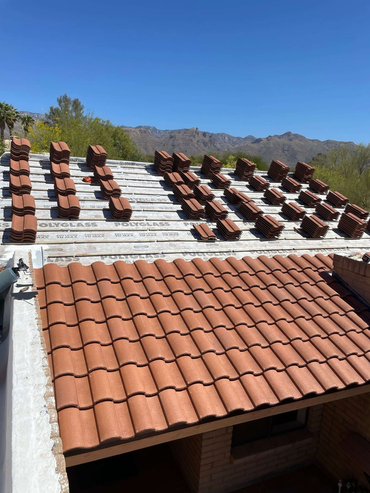

Tile Roofing · Tucson, AZ
Tile Roof Repair, Underlayment & Replacement in Tucson
Tile roofs are the Southwest, and they'll last for decades as long as the underlayment underneath gets kept up. We repair tile, re-felt it, and put on new concrete and clay tile roofs all over Tucson.
- Cracked & slipped tile repair
- Underlayment replacement
- Concrete & clay install
- Free tile roof estimate
Tile Specialists
The tile lasts. The stuff under it doesn't.
Here's the thing most people don't know: your tile can go 50 years or more, but the waterproof underlayment under it usually gives out around 20 to 25. Once that happens water gets past the tile and into the house, even though the tile up top still looks perfectly fine.
Tile's our specialty. We swap out cracked and slipped tiles, redo worn underlayment by pulling and re-stacking the tile you've already got, and we install new concrete and clay tile roofs that look sharp.
- Cracked & slipped tile repair
- Lift-and-relay underlayment replacement
- New concrete & clay tile install
- Color-matched tile sourcing
Tile Repair
Broken, cracked and slipped tiles replaced and properly re-set.
Re-Felt / Underlayment
Lift your tile, install fresh underlayment, re-stack — far cheaper than all-new tile.
New Tile Install
Full concrete or clay tile systems for new builds and replacements.
Save the Tile
Underlayment replacement: the smart middle path
If your tile's still in good shape but you're getting leaks, odds are you don't need a whole new tile roof. You need new underlayment.
We pull your tile and stack it off to the side, tear off the old shot felt, lay down new high-temp underlayment rated for the heat, then set your same tile back down. You end up with a watertight roof for a fraction of what all-new tile costs.
- Reuses your existing tile
- New desert-rated underlayment
- Watertight for another 20+ years
- A fraction of full tile-replacement cost
Concrete tile roof repair: what you can check from the ground What tile underlayment replacement costs The wrong underlayment under Tucson tile: a warning
Full Replacement
When a tile roof in Tucson really needs replacing
Sometimes it's not just the underlayment. Old clay gets brittle enough that it breaks when you walk it, a discontinued profile can't be matched any more, or a storm has taken out so much tile that re-laying what's left doesn't pencil out. That's when we talk about a full tile roof replacement: new tile, new underlayment, new flashing, the works.
We'll tell you which one you're actually looking at after we walk the roof. Most of the time it's the cheaper fix. When it isn't, we'll show you why, in photos, before you decide.
Tile roof replacement in Tucson: common questions answered Why fixing broken tiles early matters in Arizona Roof replacement in Tucson, all materials
Related Guides
More tile roof guides
Tile is most of what we do. These go deeper on how long concrete tile lasts and the repairs we run into most around Tucson, Marana and Vail.
Concrete roof tile life expectancy and maintenance A homeowner's guide to tile roof repair Tile roof repair in Marana: what homeowners should know Tile roof valley repair in Vail: common issues and fixes
How It Works
Our Roofing Process
Tile Inspection
We assess tile condition and underlayment age to recommend repair, re-felt or replace.
Written Plan
Clear scope and pricing — and honest guidance on which approach fits your roof.
The Work
Repair, lift-and-relay underlayment, or full install with proper flashing throughout.
Cleanup & Warranty
Full cleanup, magnetic nail sweep and a workmanship warranty.
From a real inspection
Wind and hail damage on a concrete tile roof
Tiles lifted clean off, battens torn up and thrown to the driveway, and one inch hail across the field and flashings.
FAQ
Roofing Questions, Answered
Still wondering about something? Call us at 520-753-1758 — straight answers, no pressure.
Ask Us DirectlyHow long does a tile roof last in Arizona?
Concrete and clay tile can go 50 years or more around here. The underlayment underneath is the part that needs redoing every 20 to 25 years, and that's the layer actually keeping water out.
When should I replace my tile roof?
Most of the time you're not replacing the tile, you're replacing the underlayment under it. If you've got leaks but the tile's intact, pulling and re-laying the tile over new underlayment is the cheaper fix. We'll tell you which one you're actually looking at.
How much does tile roof repair cost in Tucson?
Swapping a few cracked or slipped tiles is pretty cheap. Redoing the underlayment costs more since we've got to lift and re-lay all the tile, but it's still a lot less than a brand new tile roof. Estimates are free.
Can you match my existing tile?
Usually, yeah. We track down replacement tile that matches your profile and color as close as we can, and when we redo underlayment we save and reuse your original tile.
Do you install new tile roofs?
Yep. New concrete and clay tile roofs for new builds and full replacements, done with the right underlayment and flashing for this climate.
How much does tile roof replacement cost in Tucson?
A full tile replacement is the most expensive version of tile work because it's new tile, new underlayment and new flashing, not just the layer underneath. Size, pitch, and concrete versus clay are what move the number. Before you go there, let us check whether an underlayment replacement would do it, because most of the time it does and it costs a lot less. The estimate's free either way.
Tile roof leaking or aging?
We'll tell you straight whether it needs a repair, new underlayment, or the whole thing redone. Estimate's free.
Let's Talk
Let's Take a Look at Your Roof
Tell me what's going on up there — a leak, storm damage, an old roof that's seen better days, or a full replacement — and we'll get you on the books for a free inspection.